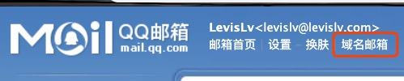
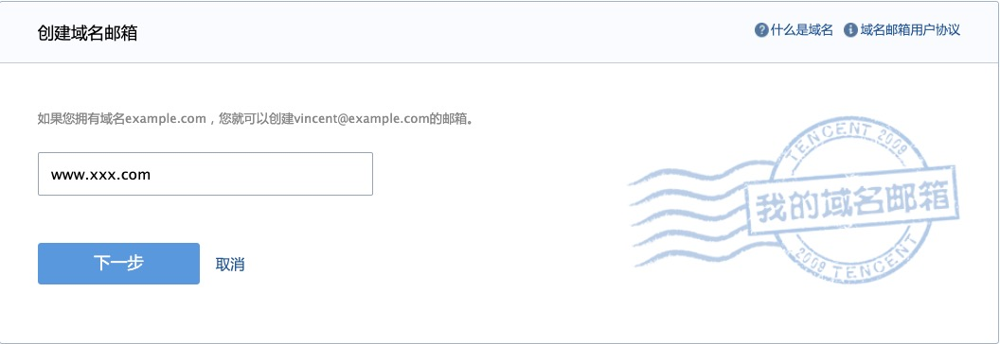
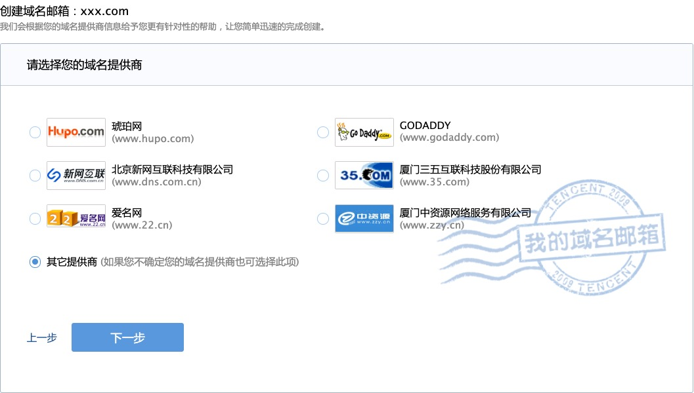
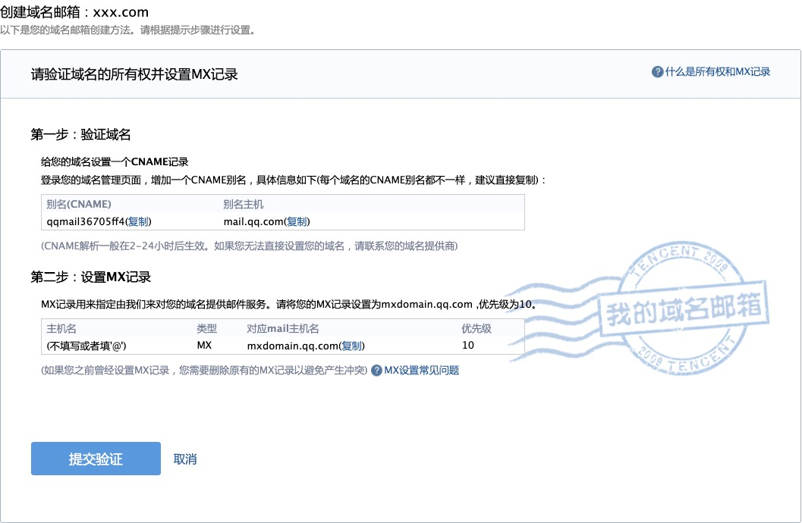
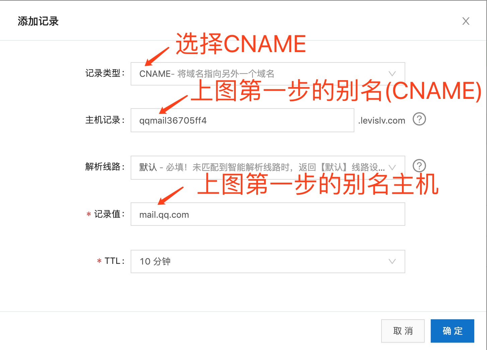
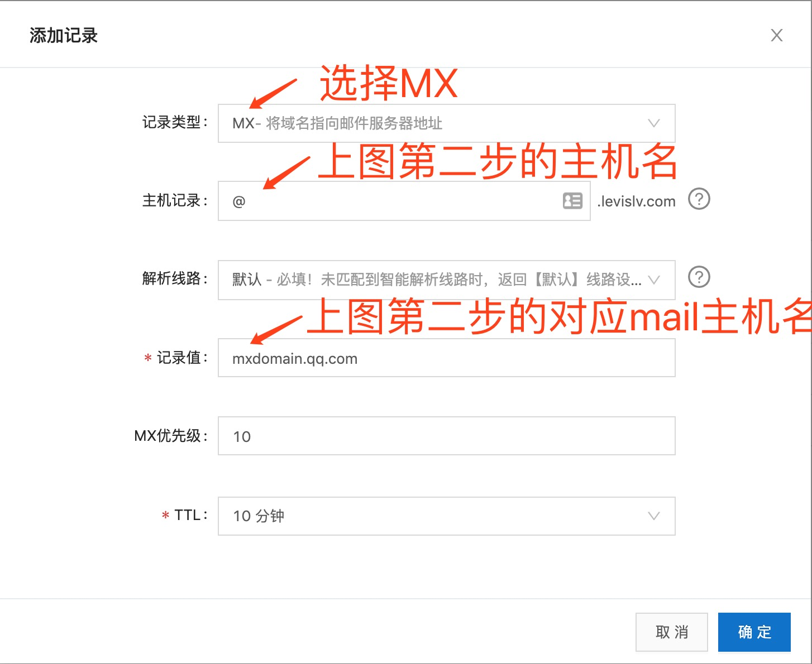

一、前言
xxx
二、域名注册
在 阿里云域名注册平台 上注册一个自己喜欢的域名，比如 xxx.com。
三、创建域名邮箱
我选择的是用 QQ 邮箱来创建域名邮箱
1、在 QQ 邮箱首页顶部点击 “域名邮箱”

2、输入刚刚注册号的域名 “xxx.com”

3、阿里云平台注册的域名需要选择 “其他提供商”

4、按照下图内容配置解析设置

四、在 阿里云域名解析设置 里添加两条记录


五、适配域名解析
这时候域名邮箱的记录占据了主域名的 @ 主机记录，所以需要添加 www 主机记录，用以映射网站首页。
比如我的个人主页地址就需要访问 http://www.levislv.com/ 或 https://www.levislv.com/，而无法访问 http://levislv.com/ 或 https://levislv.com/